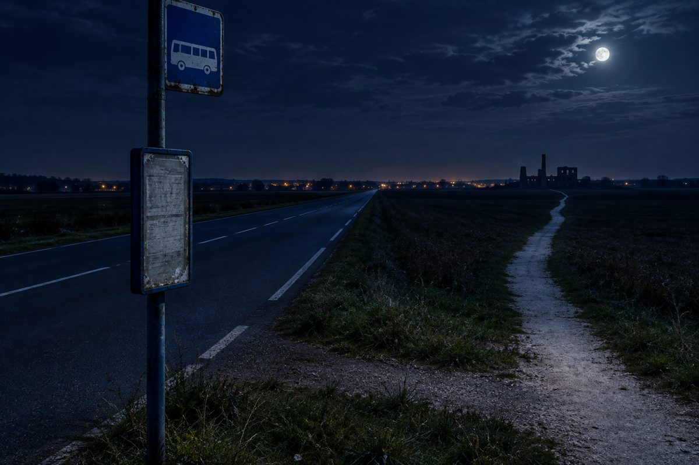

The stop is a pole and a timetable in a plastic case, half of it faded out.
From here you can see the path, pale against the fields, running up towards whatever's at the end of it.
Forty minutes. The road is flat for a mile and you'd see the headlights coming long before it arrived.
You put your hands in your pockets and look at the path.
Wave the bus down Keep looking at the path